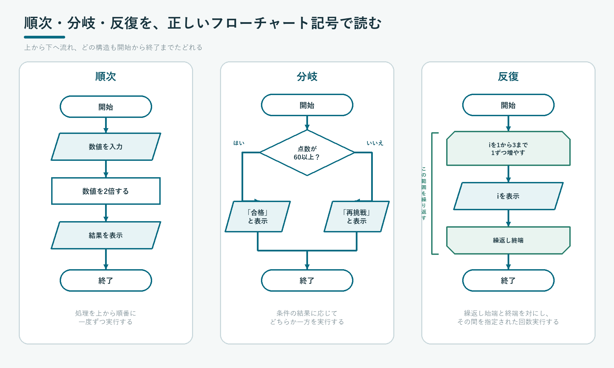

COMMON TEST NOTATION
共通テスト用プログラム表記
特定のプログラミング言語に依存せず、変数・配列・分岐・反復の考え方を共通の表記で示します。
大学入学共通テスト「情報Ⅰ」では、学校ごとに学ぶプログラミング言語が異なることを踏まえ、問題中でを使います。特定の実装言語に依存せず処理の考え方を示すであり、問題文の説明と照らしながら処理を読むための共通表記です。
| 項目 | 表記と例 | 読むときの要点 |
|---|---|---|
| 変数 | kosu、kingaku_goukei | 英字で始まる英数字と「_」の並び |
| 配列変数 | Tokuten[3]、Data[2,4] | 配列名の先頭は大文字。特に説明がなければ添字は0から始まる |
| 文字列 | moji = "情報Ⅰ"message = "情報" + "Ⅰ" | ダブルクォーテーションで囲み、+で連結 |
| 代入 | kosu = 3nyuryoku = 【外部からの入力】 | 右辺の値を左辺の変数に代入する。 |
| 算術演算 | + - * / ÷ ％ ** | ÷は整数の商、％は余り、**はべき乗 |
| 比較演算 | == != > < >= <= | ==は左辺と右辺の値が等しいときに真となる。!=は等しくないときに真となる。>=は≧、<=は≦を表す。 |
| 論理演算 | and or not | 条件を組み合わせる／否定する |
| 関数 | kazu = 要素数(Data)表示する("データの要素数は", kazu, "です") | 「表示する」以外は、基本的に問題文中で働きが説明される |
| コメント | atai = 乱数() # 0以上1未満 | 1行内の#以降は処理の対象にならない |
配列の添字、関数の働き、繰返しの端などは、問題文の指定に沿って読みます。特に、添字は1から始まることがあるので注意します。
｜は次の行も同じ分岐・反復の中、⎿はそのまとまりの最後の行であることを示します。行頭の（1）（2）などは参照用の行番号です。
ALGORITHM · FLOWCHART
手順を、順次・分岐・反復で組み立てる
共通テスト用プログラム表記とフローチャートで、アルゴリズムの流れを読めるようにします。
は問題を解くための明確で有限な手順です。アルゴリズムを共通テスト用プログラム表記などで記述し、コンピュータが実行できる形にしたものがです。
（1）width = 【外部からの入力】 （2）height = 【外部からの入力】 （3）area = width * height （4）表示する(area)
外部から値を受け取る。
値を変数へ代入。
式や制御構造で計算。
表示する(...)で結果を示す。
複雑なプログラムも、文を上から実行する、条件によって処理を選ぶ、同じ範囲を繰り返すを組み合わせて作ります。

| 記号 | 形 | 役割 |
|---|---|---|
| 端子 | 角丸の長方形 | 開始・終了 |
| 処理 | 長方形 | 計算、代入、手続き |
| 入出力 | 平行四辺形 | 入力、表示、読込み、書出し |
| 判断 | ひし形 | 条件に応じて経路を選ぶ |
| 繰返し | 始端と終端を対にした記号 | 指定条件で範囲を繰り返す |
アルゴリズムは、正しい結果だけでなく、終了すること、手順が曖昧でないこと、扱う入力の範囲が明確であることも重要です。
VALUES · VARIABLES · OPERATORS
値・変数・演算を読み、式の結果を予測する
代入と演算の規則を押さえ、共通テスト用表記の式を一行ずつ追います。
（1）x = 2 （2）y = x + 3 （3）x = y * 2
x、yなどがです。=は右辺を先に計算し、その結果を左辺へします。
| 種類 | 表記 | 読み方 |
|---|---|---|
| 代入 | kosu = 3 | 右辺の値を左辺へ入れる |
| 算術演算 | + - * / ÷ ％ ** | 加減乗除、商、余り、べき乗 |
| 比較演算 | == != > < >= <= | 条件が成り立つかを調べる |
| 論理演算 | and or not | 条件を組み合わせる、否定する |
代入の=と、等しいか比較する==を区別します。÷は整数の商、％は余りを表します。
式は、右辺を計算してから左辺を更新する
x = x + 1では、更新前のxへ1を加え、その結果を左辺のxへ入れ直します。
さらに詳しく：トレース表で代入後の値を追う
| 実行した文 | x | y |
|---|---|---|
x = 2 | 2 | — |
y = x + 3 | 2 | 5 |
x = y * 2 | 10 | 5 |
CONDITIONAL BRANCHING
条件を上から評価し、実行する処理を一つ選ぶ
条件を上から順に調べ、縦線で処理のまとまりを追います。
（1）score = 【外部からの入力】 （2）もし score >= 80 ならば： （3）｜ grade = "A" （4）そうでなくもし score >= 60 ならば： （5）｜ grade = "B" （6）そうでなければ： （7）⎿ grade = "C" （8）表示する(grade)
もしの条件が真なら、その下のまとまりを実行します。そうでなくもしは別の条件を調べ、そうでなければはどの条件も真でなかった場合を受け持ちます。
条件は上から順に評価し、最初に真になったまとまりだけを実行します。85点はA、75点はB、40点はCです。範囲が重なる条件は、高いしきい値から先に判定します。
さらに詳しく：点数を入力したときの分岐を追う
（1）で点数を受け取ったら、（2）から条件を上から順に調べます。条件が真になったまとまりだけを実行し、その分岐の後ろにある（8）へ進みます。
| score | 条件の判定 | 実行する行 | 表示 |
|---|---|---|---|
| 85 | （2）85 >= 80 は真 | （3）を実行し、（4）〜（7）を飛ばして（8）へ | A |
| 70 | （2）は偽、（4）70 >= 60 は真 | （3）を飛ばし、（5）を実行して（8）へ | B |
| 40 | （2）も（4）も偽 | （3）（5）を飛ばし、（7）を実行して（8）へ | C |
85を入力すると、（2）のscore >= 80が真になります。（3）でgrade = "A"を実行した後は、同じ分岐の残りの条件（4）〜（7）を調べず、（8）へ進んでAと表示します。
70を入力すると、（2）は偽なので（3）は実行せず、（4）へ進みます。（4）のscore >= 60が真になるため（5）を実行し、（6）（7）は飛ばして（8）でBと表示します。40なら（2）と（4）がともに偽なので、（6）の「そうでなければ」に進み、（7）でCを代入します。
59、60、79、80のように条件が切り替わる直前・直後を試します。
（1）age = 【外部からの入力】 （2）もし age < 18 ならば： （3）｜ fee = "子ども" （4）そうでなくもし age < 65 ならば： （5）｜ fee = "一般" （6）そうでなければ： （7）⎿ fee = "シニア"
0〜17、18〜64、65以上の範囲を重複なく分けられます。
さらに詳しく：年齢を入力したときの判定を追う
（1）で年齢を受け取り、（2）の条件から順に判定します。最初の条件が真なら（3）だけを実行し、（4）以降は調べません。最初の条件が偽のときだけ、（4）の条件を調べます。
| age | 判定の順序 | 実行する行 | fee |
|---|---|---|---|
| 17 | （2）17 < 18 は真 | （3）を実行し、（4）〜（7）を飛ばす | 子ども |
| 18 | （2）は偽、（4）18 < 65 は真 | （3）を飛ばし、（5）を実行する | 一般 |
| 65 | （2）も（4）も偽 | （3）（5）を飛ばし、（7）を実行する | シニア |
18は最初の条件に含まれませんが、二つ目の条件には含まれるため「一般」になります。65はage < 65も偽なので、最後の「そうでなければ」に進みます。このように、<の境界を確認すると範囲の分け方を間違えません。
複数の条件を、正確な意味で読む
A and Bは「AとBがどちらも成り立つとき」、A or Bは「AとBの少なくとも一方が成り立つとき」と読みます。
（1）x = 8
（2）y = 3
（3）もし x > 0 and y > 0 ならば：
（4）｜ 表示する("xもyも正")
（5）そうでなくもし x == 0 or y == 0 ならば：
（6）｜ 表示する("xまたはyが0")
（7）そうでなければ：
（8）⎿ 表示する("xもyも0ではない")
x = 8、y = 3では、（3）のandの左右がともに真なので（4）を実行します。例えばx = 0、y = 3なら（3）は偽になり、（5）のorで少なくとも一方が真なので（6）を実行します。
さらに詳しく：条件の重なりと抜けを数直線で確かめる
score > 60では60が含まれず、score >= 60では60を含みます。境界の両側へ具体的な値を代入して確かめます。
FIXED REPETITION
回数や範囲を決めた反復を追う
処理する回数や要素が分かっているときの表記を読みます。
（1）goukei = 0 （2）n を 1 から 5 まで 1 ずつ増やしながら繰り返す： （3）⎿ goukei = goukei + n （4）表示する(goukei)
回数指定反復では、指定された値を順番に取り出して同じまとまりを実行します。nは1、2、3、4、5と変わり、合計は15です。
「1から5まで」のような範囲は通常、両端を含みます。開始値・終了値・増減値を先に書き出します。
値の変化を表で確かめる
さらに詳しく：二重の反復を具体例で追う
QUESTION 015あたりの例のように、外側のiを行、内側のjを列に対応させて、二重の反復で表を作ります。この例では問題文の指定により、配列Kukuの添字は1から始まるものとします。まずiを一つの値に固定し、その間にjを最初から最後まで動かします。
（1）i を 1 から 5 まで 1 ずつ増やしながら繰り返す： （2）｜ j を 1 から 3 まで 1 ずつ増やしながら繰り返す： （3）⎿ ⎿ Kuku[i, j] = i * j （4）表示する(Kuku)
外側 i | 内側 j | （3）の処理 |
|---|---|---|
| 1 | 1 → 2 → 3 | Kuku[1,1] = 1、Kuku[1,2] = 2、Kuku[1,3] = 3 |
| 2 | 1 → 2 → 3 | Kuku[2,1] = 2、Kuku[2,2] = 4、Kuku[2,3] = 6 |
| 3〜4 | それぞれ1 → 2 → 3 | 同じ順序で各行へ積を代入 |
| 5 | 1 → 2 → 3 | Kuku[5,1] = 5、Kuku[5,2] = 10、Kuku[5,3] = 15 |
i = 1のときは、まずj = 1、次に2、最後に3を実行します。内側の反復が終わるとiを2に増やし、jを再び1から始めます。これをi = 5まで続けるので、（3）の処理は5×3＝15回です。外側が行、内側が列に対応するため、最後に表示される表は次のようになります。
| 1 | 2 | 3 |
| 2 | 4 | 6 |
| 3 | 6 | 9 |
| 4 | 8 | 12 |
| 5 | 10 | 15 |
CONDITIONAL REPETITION
条件が真である間の反復を追う
初期値・条件・更新を一組で読みます。
（1）n = 1 （2）n < 100 の間繰り返す： （3）⎿ n = n * 2 （4）表示する(n)
条件反復では、反復の前に条件を調べます。nが100未満なら2倍し、128になった時点で条件が偽になるため終了します。
条件反復では、、、を一組で探します。
判定する時点をそろえてトレースする
条件に関係する変数が、条件を偽へ近づけるよう更新されなければ終了しません。
さらに詳しく：0が入力されるまで合計する
（1）goukei = 0 （2）number = 【外部からの入力】 （3）number != 0 の間繰り返す： （4）｜ goukei = goukei + number （5）⎿ number = 【外部からの入力】 （6）表示する(goukei)
入力を順に5、3、0とすると、最初の入力5で条件は真になり、goukeiは0から5になります。次の入力3でも条件は真なので、goukeiは5から8になります。最後に0が入力されると（3）のnumber != 0が偽になり、（4）（5）を実行せず（6）へ進んで8と表示します。0自体は合計へ加えず、反復を終了する合図にします。
ARRAY · INDEX
複数の値を配列へまとめ、添字で一つを指定する
同じ意味の値を配列へまとめ、添字と反復を組み合わせて処理します。
（1）Scores = [72, 85, 91, 68] （2）表示する(Scores[0]) （3）Scores[3] = 70
は複数の値を順番にまとめたものです。配列の先頭の要素の添字は、特に説明がなければ0です。4個の要素の添字は0、1、2、3です。
| 表し方 | 例 | 読み方 |
|---|---|---|
| 一次元配列 | Scores[2] | 添字2、つまり3番目の要素 |
| 二次元配列 | Data[1,3] | 二つの添字で位置を指定 |
Scores[2]の2は位置を表す添字で、この例では要素91です。
さらに詳しく：二次元配列は行と列の順番
「プログラミング・変数・配列」のQUESTION 020のように、二次元配列を表として読む問題では、添字を[行, 列]の順に確認します。
| 行＼列 | 0（名前） | 1（年齢） | 2（性別） |
|---|---|---|---|
| 0 | 田中 | 25 | 男性 |
| 1 | 山田 | 30 | 女性 |
| 2 | 鈴木 | 23 | 女性 |
| 3 | 佐藤 | 44 | 男性 |
（1）表示する(Kaiin[0, 0], "さんは", Kaiin[0, 1], "歳の", Kaiin[0, 2], "です。") （2）表示する(Kaiin[1, 0], "さんは", Kaiin[1, 1], "歳の", Kaiin[1, 2], "です。") （3）表示する(Kaiin[2, 0], "さんは", Kaiin[2, 1], "歳の", Kaiin[2, 2], "です。")
最初の添字が行、次の添字が列です。Kaiin[1, 0]は2行目・名前列なので「山田」、Kaiin[0, 1]は1行目・年齢列なので25を表します。行と列を逆にすると別のデータを参照するため、問題文の表と添字の順番を対応させます。
FUNCTION · ARGUMENT · RETURN VALUE
関数を呼び出し、引数と戻り値を追う
処理を名前の付いたまとまりとして読み、入力と出力の関係を明確にします。
（1）面積 = 長方形の面積(4, 3) （2）表示する(面積)
共通テストでは、関数の働きや定義方法が問題文中で示されます。呼出し時に渡す値と、返ってくる値を確認します。
関数は、引数を受け取り、戻り値を返すまとまりとして読む
定義の書き方は問題文に従います。仕組みを説明するため、ここでは次のように表します。
（1）関数「長方形の面積」(たて, よこ)を定義する： （2）｜ 面積 = たて * よこ （3）⎿ 面積を返す
関数定義のたて・よこを、呼出し時の4・3をといいます。
必要な値は引数で受け取り、戻り値で返すと、処理のつながりが明確になります。
入力、計算、表示を分けると、どの部分が誤っているかを確かめやすくなります。
SORT · SEARCH
【発展】ソート・探索のアルゴリズム
整列では比較と交換、探索では調べる順序と前提条件に注目します。
バブルソート：隣り合う値を比べて交換する
（1）A = [3, 8, 2, 6, 5] （2）i を 0 から 要素数(A)-2 まで 1 ずつ増やしながら繰り返す： （3）｜ j を 0 から 要素数(A)-2-i まで 1 ずつ増やしながら繰り返す： （4）｜ ｜ もし A[j] > A[j+1] ならば： （5）｜ ｜ ｜ temp = A[j] （6）｜ ｜ ｜ A[j] = A[j+1] （7）⎿ ⎿ ⎿ A[j+1] = temp
3 8 2 6 5
3 2 6 5 8
2 3 5 6 8
2 3 5 6 8
一巡ごとに、まだ整列していない範囲を一つ狭くして同じ処理を繰り返します。
さらに詳しく：バブルソートの並び替えを追う
A = [3, 8, 2, 6, 5]を左から順に比べます。外側のiが1回進むたびに、右端へ大きな値が一つ移動するため、次の巡回ではその値を比べる必要がありません。
i | j | 比較 | 交換後のA |
|---|---|---|---|
| 0 | 0 | 3 > 8 は偽 | [3, 8, 2, 6, 5] |
| 0 | 1 | 8 > 2 は真 | [3, 2, 8, 6, 5] |
| 0 | 2 | 8 > 6 は真 | [3, 2, 6, 8, 5] |
| 0 | 3 | 8 > 5 は真 | [3, 2, 6, 5, 8] |
| 1 | 0 | 3 > 2 は真 | [2, 3, 6, 5, 8] |
| 1 | 1 | 3 > 6 は偽 | [2, 3, 6, 5, 8] |
| 1 | 2 | 6 > 5 は真 | [2, 3, 5, 6, 8] |
| 2 | 0 | 2 > 3 は偽 | [2, 3, 5, 6, 8] |
| 2 | 1 | 3 > 5 は偽 | [2, 3, 5, 6, 8] |
| 3 | 0 | 2 > 3 は偽 | [2, 3, 5, 6, 8] |
i = 0ではjが0〜3、i = 1では0〜2、i = 2では0〜1、i = 3では0だけ動きます。最初の巡回で最大の8が右端へ移り、次の巡回で6がその一つ左へ移ります。交換では（5）で左の値をtempへ退避し、（6）（7）で二つの値を入れ替えます。
線形探索と二分探索
| 方法 | 調べ方 | 前提 |
|---|---|---|
| 線形探索 | 先頭から一つずつ調べる | 並び順を問わない |
| 二分探索 | 中央と比べ、候補を半分にする | 昇順または降順に整列済み |
（1）Data = [18, 25, 31, 42] （2）atai = 【外部からの入力】 （3）owari = 0 （4）i を 0 から 要素数(Data)-1 まで 1 ずつ増やしながら繰り返す： （5）｜ もし Data[i] == atai ならば： （6）｜ ｜ 表示する(atai, "は", i, "番目にありました") （7）⎿ ⎿ owari = 1 （8）もし owari == 0 ならば： （9）⎿ 表示する(atai, "は見つかりませんでした")
線形探索は先頭から一つずつ、二分探索は整列済みのデータの中央から調べます。
さらに詳しく：線形探索の手順を追う
線形探索：前から一つずつ調べる
Data = [18, 25, 31, 42]から、atai = 31を探します。添字は0から始まるものとします。まずowari = 0として、見つかるまでの状態を表にします。
| 調べる順番 | i | Data[i] | Data[i] == atai | そのときの処理 |
|---|---|---|---|---|
| 1 | 0 | 18 | 偽 | owari = 0のまま、次へ進む |
| 2 | 1 | 25 | 偽 | owari = 0のまま、次へ進む |
| 3 | 2 | 31 | 真 | 表示し、owari = 1にする |
| 4 | 3 | 42 | 偽 | owari = 1のまま、最後まで調べる |
この表記では、目的の値を見つけても繰り返しをすぐには抜けず、最後の要素まで調べます。繰り返しが終わったときにowari == 0なら一度も見つかっていないので「見つかりませんでした」と表示します。例えばatai = 30ならすべての比較が偽となり、owariは0のままです。
二分探索の表記例
二分探索では、整列済みのData = [3, 18, 29, 33, 48, 52, 62, 77, 89, 97]から目的の値を探します。hidariを探索範囲の左端、migiを右端、aidaを中央の添字として、中央の値とataiを比較します。
（1）Data = [3, 18, 29, 33, 48, 52, 62, 77, 89, 97] （2）kazu = 要素数(Data) （3）atai = 【外部からの入力】 （4）hidari = 0 （5）migi = kazu - 1 （6）owari = 0 （7）hidari <= migi and owari == 0 の間繰り返す： （8）｜ aida = (hidari + migi) ÷ 2 （9）｜ もし Data[aida] == atai ならば： （10）｜ ｜ 表示する(atai, "は", aida, "番目にありました") （11）｜ ｜ owari = 1 （12）｜ そうでなくもし Data[aida] < atai ならば： （13）｜ ｜ hidari = aida + 1 （14）｜ そうでなければ： （15）⎿ ⎿ migi = aida - 1
（9）で値が等しければ見つかったとしてowari = 1にし、（12）が真なら探索範囲の左端をaida + 1に、そうでなければ右端をaida - 1に更新します。÷は整数の商を返すものとし、二分探索を使うにはDataが昇順または降順に整列済みであることが必要です。
さらに詳しく：二分探索の手順を追う
atai = 62を入力したとき、中央の値と比較するたびに候補の範囲がどう狭くなるかを表にします。
| 回 | 探索範囲hidari ～ migi | aida | Data[aida] | 比較と次の範囲 |
|---|---|---|---|---|
| 1 | 0 ～ 9 | 4 | 48 | 48 < 62なので、左端を5にする |
| 2 | 5 ～ 9 | 7 | 77 | 77 > 62なので、右端を6にする |
| 3 | 5 ～ 6 | 5 | 52 | 52 < 62なので、左端を6にする |
| 4 | 6 ～ 6 | 6 | 62 | 62 == 62なので、見つかったとして終了 |
1回目は中央の添字4を調べ、62は48より大きいので、添字0〜3を候補から外します。2回目は添字5〜9の中央の添字7を調べ、62は77より小さいので、添字7〜9を候補から外します。3回目に添字5を調べ、52より大きいので左端を6にすると、最後に添字6の62へたどり着きます。
atai = 50なら、48より大きいので左端を5、77より小さいので右端を6、52より小さいので右端を4にします。左端5が右端4を越え、探索範囲がなくなるため、owariは0のままで「見つかりませんでした」と表示します。
TEST · DEBUG · PRACTICE
正常値・境界値・異常値を試し、原因を切り分ける
プログラムは、想定した範囲で正しく動くかを確かめます。
正常値
典型的な入力で期待する結果になるか。
境界値
条件が切り替わる直前・直後。
異常値
文字列、範囲外、欠損など。
表記の規則に合わない誤り、実行中に不正な処理が起こる誤り、実行できても答えが誤るを区別します。問題文の定義と処理の流れに照らして、結果がずれた場所を探します。
整数nを入力し、偶数なら「偶数」、奇数なら「奇数」と表示しましょう。
解答例・解説
（1）n = 【外部からの入力】
（2）もし n ％ 2 == 0 ならば：
（3）｜ 表示する("偶数")
（4）そうでなければ：
（5）⎿ 表示する("奇数")2で割った余りが0なら偶数です。
400の倍数、100の倍数、4の倍数の順に条件を確認して、うるう年か平年かを表示しましょう。
解答例・解説
（1）year = 【外部からの入力】
（2）もし year ％ 400 == 0 ならば：
（3）｜ 表示する("うるう年")
（4）そうでなくもし year ％ 100 == 0 ならば：
（5）｜ 表示する("平年")
（6）そうでなくもし year ％ 4 == 0 ならば：
（7）｜ 表示する("うるう年")
（8）そうでなければ：
（9）⎿ 表示する("平年")1900は平年、2000と2024はうるう年です。
2以上の整数nが素数か調べましょう。
解答例・解説
（1）n = 【外部からの入力】
（2）is_prime = 1
（3）i を 2 から n-1 まで 1 ずつ増やしながら繰り返す：
（4）｜ もし n ％ i == 0 ならば：
（5）⎿ ⎿ is_prime = 0
（6）もし is_prime == 1 ならば：
（7）｜ 表示する("素数")
（8）そうでなければ：
（9）⎿ 表示する("素数ではない")どの値でも割り切れなければ素数です。
デバッグでは、入力・途中の変数・条件式・出力を小さく確認します。原因を推測して一度に多く直すのではなく、を固定して検証します。
期待する答えを先に決めてから実行する
入力と期待する出力を先に書き、実際の出力と比べます。間違ったときは、途中の変数を表にして原因の場所を絞ります。
さらに詳しく：乱数を使うシミュレーション
（1）Counts = [0, 0, 0, 0, 0, 0] （2）i を 1 から 1000 まで 1 ずつ増やしながら繰り返す： （3）｜ 出目 = 整数(乱数() * 6) + 1 （4）⎿ Counts[出目-1] = Counts[出目-1] + 1
乱数で1〜6の出目を作り、出目ごとの回数を配列へ数えます。